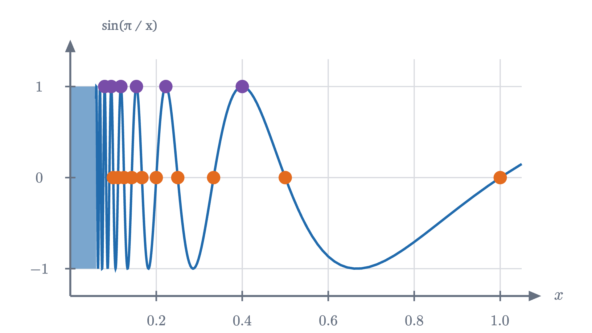
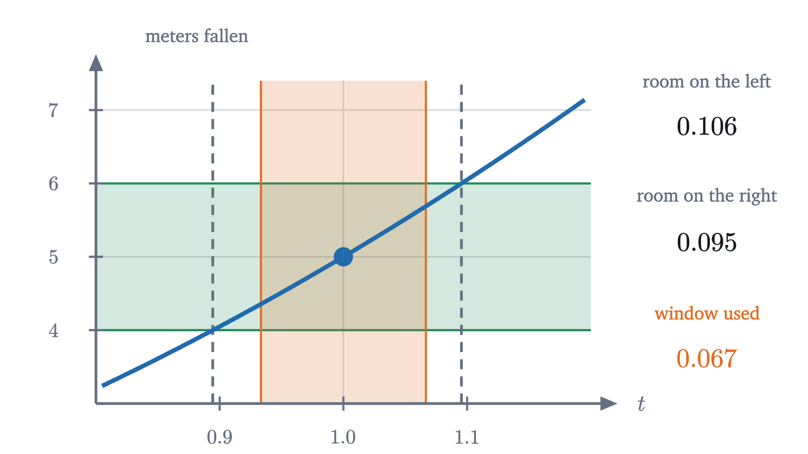
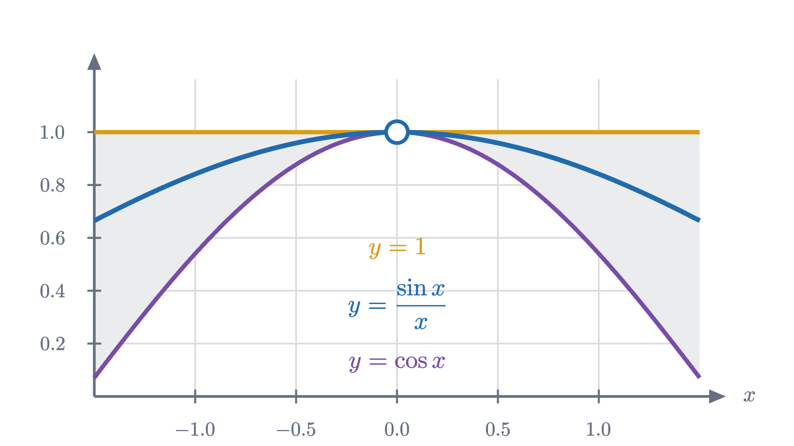

What is a limit? The epsilon-delta definition, explained
A limit is a game. You name a tolerance, I answer with a window. From that one definition we prove the limit laws and the squeeze theorem.
Ask a calculator for $\frac{\sin x}{x}$ at $x = 0$ and it reports an error, because the expression is $\frac{0}{0}$. Ask at $x = 0.5$, $0.1$ and $0.01$ (in radians) and it reports $0.958851$, $0.998334$ and $0.999983$. The function has no value at 0, and yet its values near 0 plainly have somewhere they are going: the graph above is a smooth arch with one point missing, at height 1.
Every derivative in this series has relied on this situation. A difference quotient $\frac{f(a+h) - f(a)}{h}$ is never defined at $h = 0$, and the derivative is the number its values “close in on”. Lesson 1 made that phrase precise for one simple case. Later lessons, on the power rule and the product rule, then quoted rules, such as “the limit of a product is the product of the limits”, and promised that the proofs would come. This lesson says exactly what a limit is and then proves those rules from the definition.
Why a table of values is not enough
Plugging in small values of $x$ and watching is a fine way to guess where $\frac{\sin x}{x}$ is going. As a definition of “limit” it fails, and one example shows how badly.
Let $w(x) = \sin\!\left(\frac{\pi}{x}\right)$, which like our first function is undefined at $x = 0$. Here is a table of its values as $x$ shrinks.
| $x$ | $0.5$ | $0.25$ | $0.1$ | $0.01$ | $0.001$ |
|---|---|---|---|---|---|
| $\pi / x$ | $2\pi$ | $4\pi$ | $10\pi$ | $100\pi$ | $1000\pi$ |
| $w(x)$ | $0$ | $0$ | $0$ | $0$ | $0$ |
Every entry is exactly 0, because the sine of a whole multiple of $\pi$ is 0. Anyone who trusts tables would conclude that $w(x)$ is going to 0.
Pause and try
Compute $w(x)$ at $x = 0.4$, $x = 0.08$ and $x = 0.016$. (Work out $\pi / x$ as a multiple of $\pi$ first.) What does this second table suggest?
Show answerHide answer
$\pi / 0.4 = 2.5\pi$, $\pi / 0.08 = 12.5\pi$ and $\pi / 0.016 = 62.5\pi$. Each is a whole number of full turns plus $\frac{\pi}{2}$ (for instance $12.5\pi = 6 \cdot 2\pi + \frac{\pi}{2}$), so all three values are $\sin\frac{\pi}{2} = 1$. This table suggests a limit of 1, and the two tables cannot both be right.

The graph explains the contradiction. As $x$ shrinks toward 0, $\frac{\pi}{x}$ grows without bound, so the sine runs through its cycle over and over, faster each time. Between any small positive number and 0 the function takes the value 0 infinitely often and the value 1 infinitely often. A table samples a few inputs, and by choosing them we chose the answer.
So “the values at the inputs I tried seem to settle” cannot be what a limit means. Whatever the definition is, it must speak about all inputs near the point, and it has to distinguish $\frac{\sin x}{x}$, which behaves, from $\sin\frac{\pi}{x}$, which does not.
A game: you name a tolerance, I name a window
To find the right statement, go back to a case where we understand everything. In lesson 1 a dropped ball had fallen $s(t) = 5t^2$ meters after $t$ seconds. Its average speed between time 1 and a different time $x$ is distance over time,
in meters per second. At $x = 1$ the quotient is $\frac{0}{0}$ and $f$ has no value. Everywhere else its graph is the line $5x + 5$, so its values near $x = 1$ are near 10.
Now suppose you doubt that 10 deserves to be called the limit, and you test me. You name a tolerance, say 1 m/s, and demand that the average speed be within that tolerance of 10. My job is to answer with a window around $x = 1$ such that every input in the window, other than 1 itself, meets your demand.
Since $f(x) - 10 = 5x - 5 = 5(x - 1)$, the distance from $f(x)$ to 10 is exactly five times the distance from $x$ to 1. To keep the first below 1, I need the second below $0.2$. So I answer “within $0.2$ of 1”, and I win that round.
Pause and try
You tighten the tolerance to $0.001$ m/s. What window do I answer with? Then give my reply to a general tolerance, written as a letter.
Show answerHide answer
I need $5|x - 1| < 0.001$, so $|x - 1| < 0.0002$: any end time within two ten-thousandths of a second of 1. For a general tolerance $\varepsilon > 0$, the window “within $\varepsilon / 5$ of 1” works, because then $|f(x) - 10| = 5|x - 1| < 5 \cdot \frac{\varepsilon}{5} = \varepsilon$.
I have a winning reply to every tolerance you could name, and that is the content of “the limit is 10”. A limit is a guarantee: closeness of the output, to any standard, can be bought by closeness of the input.
The definition
Written with the traditional letters, $\varepsilon$ (epsilon) for the tolerance and $\delta$ (delta) for the half-width of the window, the game becomes the definition.
Each clause is a rule of the game. “For every $\varepsilon > 0$” says you may name any tolerance. “There is a $\delta > 0$” says I must be able to reply, with a $\delta$ that may depend on your $\varepsilon$. The inequality $|x - a| < \delta$ describes the window, on both sides of $a$. The inequality $0 < |x - a|$ removes $x = a$ from the window, so the definition never looks at $f(a)$: the function may be undefined there, as ours are, or may have some unrelated value. And “implies” says that every input in the window must succeed, which is the clause that a table of values cannot check.
This is the definition from lesson 1 with new letters: there the variable was $h$ and the point was 0. We also showed there that a function cannot have two different limits at one point, so “the limit” is a single number when it exists. I will write $f(x) \to L$ as $x \to a$ for the same statement.
For the average speed, the reply $\delta = \varepsilon / 5$ proves $\lim_{x \to 1} f(x) = 10$. That function was a straight line, so the output error was a fixed multiple of the input error. On a curve it is not, and the reply takes one more idea.

The window from the proof is not the largest that works: the curve stays in the band out to $0.106$ on the left and $0.095$ on the right, and we used $0.067$. That is fine. The definition asks for a $\delta$, and any smaller one also works, so there is no need to find the best. The device of taking “the smaller of two numbers” makes two promises at once: a rough one ($|t - 1| < 1$) that tames the nuisance factor, and a fine one that then wins the round. Every proof below uses it.
When there is no limit
To prove that a limit does not exist we need the opposite of the definition, stated just as carefully.
Pause and try
The definition says “for every $\varepsilon > 0$ there is a $\delta > 0$ such that every $x$ with $0 < |x - a| < \delta$ has $|f(x) - L| < \varepsilon$.” Write down what it means for this to be false. Who has to produce what?
Show answerHide answer
It is false when you have a winning tolerance: there is an $\varepsilon > 0$ such that for every $\delta > 0$, some $x$ with $0 < |x - a| < \delta$ has $|f(x) - L| \ge \varepsilon$. You produce one tolerance, and for whatever window I offer you point to one input inside it that misses. To show there is no limit at all, do this for every candidate $L$.
The simplest function with no limit has a jump. Let $u(x) = 0$ for $x < 0$ and $u(x) = 1$ for $x > 0$.
The last slide is the proof. If $u$ had a limit $L$ at 0, then for $\varepsilon = 0.4$ some window would put every $u(x)$ within $0.4$ of $L$. Every window contains negative inputs, where $u = 0$, and positive inputs, where $u = 1$, so $L$ would be within $0.4$ of both 0 and 1, which no number is.
What $u$ does have is a limit from each side. Testing only inputs with $a < x < a + \delta$ gives the right-hand limit $\lim_{x \to a^+} f(x)$, and only inputs with $a - \delta < x < a$ the left-hand limit $\lim_{x \to a^-} f(x)$. For $u$ at 0 these are 1 and 0. A two-sided limit exists exactly when both one-sided limits exist and are equal: a window that works on both sides works on each, and given a $\delta$ for each side, the smaller of the two works on both.
A jump is a mild failure. The function $w(x) = \sin\frac{\pi}{x}$ fails more thoroughly: it has no limit at 0 even from one side. Watch what zooming in does to its graph.
To turn that picture into a proof we need one tool, which every later argument uses as well.
Its usual job is to pass through an intermediate point: the distance from $A$ to $C$ is at most the distance from $A$ to $B$ plus the distance from $B$ to $C$, that is, $|A - C| \le |A - B| + |B - C|$ (take $p = A - B$ and $q = B - C$).
The limit laws
Finding a $\delta$ by hand for every new function would be slow. In practice limits are computed from a few known ones by rules, the ones that lessons 1 to 4 quoted. Before stating them, try the numbers.
Pause and try
A quantity $f$ is known to be within $0.01$ of 3, and a quantity $g$ is within $0.01$ of 4. How far can $f + g$ be from 7? How far can $f \cdot g$ be from 12?
Show answerHide answer
The sum lies between $2.99 + 3.99 = 6.98$ and $3.01 + 4.01 = 7.02$, so it is within $0.02$ of 7: the errors add. The product lies between $2.99 \times 3.99 = 11.9301$ and $3.01 \times 4.01 = 12.0701$, so it is within $0.0701$ of 12. That is about $0.01 \times 4 + 0.01 \times 3$: each error is multiplied by the size of the other quantity.
For the sum, the errors add, so to hold the sum within $\varepsilon$ it is enough to hold each term within $\varepsilon / 2$. The product needs a picture. Draw the target as a rectangle of height $L$ and width $M$, and the actual product as a rectangle of height $f$ and width $g$.
The picture gives an identity that is true for all numbers, whatever their signs:
The second strip is easy: $L$ is a constant, so $L(g - M)$ is small when $g - M$ is. The first strip is a small quantity $f - L$ multiplied by $g$, which is not a constant. This is the nuisance factor from the $5t^2$ example again, and the same repair works: near $a$, the function $g$ is within 1 of $M$, so its size is less than $|M| + 1$.
Two limits are needed to get started, and both are immediate: a constant function $c$ has limit $c$, and $\lim_{x \to a} x = a$ (reply $\delta = \varepsilon$). Every polynomial is built from constants and $x$ by sums and products, so the laws give $\lim_{x \to a} p(x) = p(a)$ for every polynomial $p$, and the quotient law extends this to ratios of polynomials wherever the denominator is not zero at $a$.
This settles a debt from lesson 1, where the difference quotient of $\frac{1}{x}$ was $\frac{-1}{a(a+h)}$ and its limit $-\frac{1}{a^2}$ was taken “by the quotient law”: the denominator is a polynomial in $h$ with limit $a^2 \neq 0$.
The squeeze theorem
The laws do not reach the function we started with. In $\frac{\sin x}{x}$ the denominator has limit 0, and there is no algebra that cancels an $x$ out of $\sin x$. What we do have, from the geometry in lesson 4, is a pair of bounds. Comparing the areas of a triangle, a circular sector and a larger triangle gave $\sin x < x < \tan x$ for $0 < x < \frac{\pi}{2}$, and from that

The function is trapped in a corridor whose floor and ceiling both arrive at height 1. That argument does not depend on what the trapped function is.
The theorem does not assume that $f$ has a limit; that is its conclusion. To apply it to $\frac{\sin x}{x}$ we need the limits of the two bounds. The ceiling is the constant 1. For the floor, lesson 4 also proved $0 \le 1 - \cos x \le \frac{x^2}{2}$ for every $x$, that is,
Both outer functions are polynomials with limit 1 at 0, so by the squeeze theorem $\lim_{x \to 0} \cos x = 1$. A second application, to $\cos x < \frac{\sin x}{x} < 1$, gives
The squeeze theorem and the limit laws are proved above; the two inequalities are quoted from lesson 4, where they were proved from the area of a circular sector.
The squeeze theorem can even tame the function that had no limit.
The function still oscillates infinitely often in every window around 0, so oscillation alone does not destroy a limit. What matters is whether the size of the oscillation inside the window can be forced below any tolerance.
Continuity
For a polynomial $p$ we found $\lim_{x \to a} p(x) = p(a)$: the limit is the value. That property has a name, and the next lessons depend on it.
The definition makes three demands: $f(a)$ exists, the limit exists, and they are equal. The jump function $u$ fails the second at 0. The function $\frac{\sin x}{x}$ fails only the first: define its value at 0 to be 1 and it becomes continuous there. By the limit laws, sums, products and quotients (with nonzero denominator) of continuous functions are continuous.
Check yourself
Let $f(x) = \dfrac{x^2 - 4}{x - 2}$ for $x \neq 2$, and let $f(2) = 0$. What is $\lim_{x \to 2} f(x)$?
What was hard
The difficulty is the order of the words: “for every tolerance there is a window” is a promise that can be kept or broken. With the definition fixed, the proofs share one pattern: split the error with the triangle inequality, give each piece a share of $\varepsilon$, and take the smallest window. The integral, defined in the next lesson, is a limit of the same kind.
Problems
The first two repeat the lesson’s moves, the next three ask you to combine them or to explain, and the last goes further.
Problem 1
Prove from the definition that $\lim_{x \to 2} (5x - 3) = 7$. What window does your proof give for the tolerance $\varepsilon = 0.01$?
Show solutionHide solution
$|(5x - 3) - 7| = |5x - 10| = 5|x - 2|$. Given $\varepsilon > 0$, let $\delta = \varepsilon / 5$. If $0 < |x - 2| < \delta$ then $|(5x - 3) - 7| = 5|x - 2| < 5\delta = \varepsilon$. For $\varepsilon = 0.01$ this is $\delta = 0.002$. At the edge, $x = 2.002$ gives $5x - 3 = 7.01$, exactly at the tolerance, so inputs strictly inside the window are strictly within it.
Problem 2
Use the limit laws to evaluate (a) $\displaystyle\lim_{x \to 2} \frac{x^2 + 3x}{x - 1}$ and (b) $\displaystyle\lim_{x \to 1} \frac{x^2 + 3x - 4}{x - 1}$. Say which law is used at each step, and why (b) needs an extra step.
Show solutionHide solution
(a) The numerator is a polynomial, so by the sum and product laws its limit at 2 is $4 + 6 = 10$. The denominator has limit $2 - 1 = 1 \neq 0$. By the quotient law the limit is $\frac{10}{1} = 10$. (b) The denominator has limit 0, so the quotient law does not apply. Factor: $x^2 + 3x - 4 = (x - 1)(x + 4)$, so the quotient equals $x + 4$ for every $x \neq 1$. Functions that agree for $x \neq 1$ have the same limit at 1, and $x + 4$ has limit 5. Check at $x = 1.1$: $\frac{0.51}{0.1} = 5.1$.
Problem 3
Prove directly from the definition, without the quotient law, that $\lim_{x \to 2} \dfrac{1}{x} = \dfrac{1}{2}$.
Show solutionHide solution
$\left|\frac{1}{x} - \frac{1}{2}\right| = \frac{|2 - x|}{2|x|}$. The nuisance factor is $\frac{1}{|x|}$, which is large if $x$ is near 0. Promise $|x - 2| < 1$; then $x > 1$, so $\frac{1}{|x|} < 1$ and the error is less than $\frac{|x - 2|}{2}$. Given $\varepsilon > 0$, let $\delta$ be the smaller of $1$ and $2\varepsilon$. If $0 < |x - 2| < \delta$ then $\left|\frac{1}{x} - \frac{1}{2}\right| < \frac{|x - 2|}{2} < \frac{2\varepsilon}{2} = \varepsilon$. The promise $|x - 2| < 1$ plays the part of $|g(x) - M| < \frac{|M|}{2}$ in the proof of the quotient law: it keeps the denominator away from 0.
Problem 4
Show that $\dfrac{1}{x}$ has no limit as $x \to 0$. (This is a third way to fail, different from a jump and from oscillation.)
Show solutionHide solution
Suppose the limit were $L$. Take $\varepsilon = 1$; there would be a $\delta > 0$ such that $0 < |x| < \delta$ implies $\left|\frac{1}{x} - L\right| < 1$. Choose a positive $x$ smaller than both $\delta$ and $\frac{1}{|L| + 1}$. Then $\frac{1}{x} > |L| + 1$. By the triangle inequality $\frac{1}{x} = \left|\frac{1}{x}\right| \le \left|\frac{1}{x} - L\right| + |L|$, so $\left|\frac{1}{x} - L\right| \ge \frac{1}{x} - |L| > 1$. That input is in the window and misses the tolerance, a contradiction. The function fails by growing without bound.
Problem 5
Here is a “proof” that $1 = 0$. Find the error. “For $x \neq 0$ we have $x \cdot \frac{1}{x} = 1$, so $\lim_{x \to 0} x \cdot \frac{1}{x} = 1$. By the product law, $\lim_{x \to 0} x \cdot \frac{1}{x} = \left(\lim_{x \to 0} x\right)\left(\lim_{x \to 0} \frac{1}{x}\right) = 0 \cdot \left(\lim_{x \to 0} \frac{1}{x}\right) = 0$.”
Show solutionHide solution
The product law has a hypothesis: both limits must exist. By the previous problem $\lim_{x \to 0} \frac{1}{x}$ does not exist, so the law says nothing here and the second chain of equalities has no meaning from its second step on. “Zero times anything is zero” applies to numbers, and $\lim_{x \to 0} \frac{1}{x}$ is not a number. In the proof of the product law, the hypothesis was used when we bounded $|g(x)|$ by $|M| + 1$ near $a$; the function $\frac{1}{x}$ has no such bound near 0.
Problem 6
Let $f(x) = x^2 \sin\dfrac{\pi}{x}$ for $x \neq 0$ and $f(0) = 0$. (a) Show that $f$ is continuous at 0. (b) Show that $f$ is differentiable at 0 and find $f'(0)$.
Show solutionHide solution
(a) For $x \neq 0$, $\left|\sin\frac{\pi}{x}\right| \le 1$ gives $-x^2 \le f(x) \le x^2$. Both $x^2$ and $-x^2$ are polynomials with limit 0 at 0, so by the squeeze theorem $\lim_{x \to 0} f(x) = 0 = f(0)$. (b) The difference quotient at 0 is $\frac{f(h) - f(0)}{h} = \frac{h^2 \sin(\pi / h)}{h} = h \sin\frac{\pi}{h}$ for $h \neq 0$. By the worked example in the lesson this has limit 0 as $h \to 0$. So $f'(0) = 0$. The graph oscillates infinitely often near 0 and still has a tangent line there, the $x$ axis, because it is trapped between $\pm x^2$.